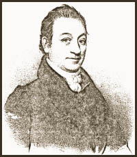

BOSTON MEDICAL AND SURGICAL JOURNAL.
Vol. XXXIII. Wednesday, October 1, 1845. No. 9
MEMOIR OF BENJAMIN PAGE, M.D.
Born April 12, 1770; died Jan. 25, 1844.
[Communicated for the Boston Medical and Surgical Journal.]
[abridged]
...Dr. Page was born April 12, 1770, at Exeter, in the State of New Hampshire, and received his preparatory education at the Academy in that place, which was then under the superintendent of Woodbridge Odlin, and which has ever been one of the most celebrated institutions in New England for the thoroughness of its instruction, and the character of its pupils. His professional studies were pursued under the direction of his father, and the celebrated Dr. Kettredge, of Andover, Mass., a physician and surgeon that time of extensive practice and distinguished reputation. He began his professional career at Hallowell, in 1791, and here pursued it, "in season and out of season," with an uncompromising diligence and success for more than half a century.
| ? | How old was Dr. Page when he began to practice medicine? |
| Before 1796, smallpox vaccinations used the live smallpox virus, and people often died from the inoculations. |
In 1793 he went to Boston to place himself in the hands of Dr. Aspinwall, to be inoculated for the smallpox, in a hospital which had just been established in Brookline. Finding it closed on his arrival, he proceeded to Dunbarton for the same object. Disappointed here, also, and zealous and determined in the object he had in view, he repaired to his uncle's Ware, where he and another young physician, and several of the family, submitted to smallpox inoculation, and remained in close confinement about a month; passing an ordeal which at that time was regarded as among the severest and most perilous to which youth or manhood could be subjected. To show how little apprehension was entertained, however, by the subject of this memoir, he used to relate that he his companion passed the whole of their confinement very cheerfully, and entertained themselves agreeably with music, &c., most of the time--he playing the flute with considerable taste and execution, and his medical companion the violin.
After his recovery from smallpox, Dr. Page retained to Hallowell to resume his practice, and with the intention of opening a smallpox hospital upon a little island in what is now called Alliston's lake, in Winthrop, a few miles west of the Kennebec. While matters were in progress, however, for this enterprise, he was furnished with some vaccine matter by his most intimate and attached friend, Benjamin Vaughan, Esq., who had just received it directly from the hands of Dr. Jenner, of London. He immediately made use of it, and was the first American physician, be it known, who applied the vaccine virus to the arm of the human subject in this country. Great was his disappointment, however, upon finding the matter dry and inert, more especially as a portion the same parcel which had been sent to Boston proved operative, and gave to a distinguished medical philosopher of the times the enviable reputation which he himself would otherwise have obtained. A few days subsequently he received another parcel from this estimable friend Dr. Jackson, of Boston, and availing himself also of fresh matter from the arm of a lady who had been vaccinated there, and who is since allied by marriage to his family, he renewed his efforts with success, and was the means of thus early distributing this great blessing of mankind through the whole circle of his practice. The success of the vaccine superseded the necessity of a smallpox hospital, and although considerable expense was incurred in the enterprise, it was abandoned almost as soon as conceived.
In 1796 he married Abigail Butler, of Newburyport, a lady of great personal beauty, and who to many polite accomplishments, joined into more amiable virtues of the mind. All who know her appreciate her amiability of character. Her watchful devotion to her invalid husband during his protracted illness was the admiration of every one. "Here the spirit of the wife and mother rose superior to an ordinary nature. Night after night, without closing her eyes, did she watch 'with patient, vigilant, never-wearied love,' at the bedside of the object of her long-cherished affections. Week after week and month after month, did she patiently devote to the languishing sufferer. With noiseless step would she pace the chamber, fearful lest the slightest foot-fall should disturb the hoped-for slumber of her idol-one. No toil, no privation, was shunned by her. Untiring and self-sacrificing in her disposition, her world was narrowed to the limits of the sick one's wants, hopes, and changes. The angels of heaven must contemplate such conduct with looks of love and admiration. It is in such moments we appreciated the mother, the wife, the woman."
From the day of marriage to the death of her beloved husband--the "beloved physician"--they were never separated; and it is worthy of especial remark, that this is the first and only death in the family that has ever occurred; ...Here had they happily lived together, surrounded by their children's children, fully realizing the truth of the wise man's saying, "The just walketh in his integrity; his children are blessed after him."
 Dr. Benjamin Page |
Martha Ballard There are no portraits of midwives from this time period! |
...Dr. Page was a man of large stature and good form, and of mild and benignant countenance. It beemed with a lively intelligence, and a good natural expression of mirth and cheerfulness lay over all. His head was small, his eye reflective, but clear and benignant, and his whole features regularly handsome in youth, and even in the decline of life and under afflicted health, was a person of prepossessing and commanding appearance. He possessed the qualities of a true gentleman, suavity and benevolence of disposition, a nice perception of the properties of social life, and a spirit of deference to the feelings and rights of others.
In youth he was gifted with sound health and strength. While a pupil at Exeter, his father's dwelling, which was directly opposite the Academy, caught fire and was consumed. During the progress of the flames he entered one of the rooms and removed a large book-case with all its contents, and safely deposited it in the street. The next morning he in vain attempted to raise it, and could never afterwards move it from the floor--showing the effect of personal strength when under the influence of excitement or alarm...
Dr. Page devoted himself almost exclusively to his profession, and unambitious of elevated distinction, he enjoyed with complacency the unrivaled success which he early attained. His advantages of professional education were not equal to those of the present day, but the benefit he derived from a free access to the best private medical library in New England, that of the late Benj. Vaughan, Esq., LL.D., and an intimate personal intercourse with him, who constantly possessed the improvements in the science of medicine, more than counterbalanced the defects of early advantages. Possessing naturally a strong mind, whose powers were happily adjusted, he was able to make all sources of knowledge and means of improvement which lay in his path subservient to this use. the distinguishing trait of his mind was judgment, which conduces more than any other to distinction in the medical profession. of a manly and ingenuous disposition, he disdained to practise any of the arts of quackery. He never made any efforts to acquire the talent to display his knowledge for the purpose of obtaining the reputation of a learned man, but was content to evince, on all occasions, an ability equal to the exigency of his situation. His resources were shown by what he could or did do, rather than what could or did say. Hence his professional distinction was not so extensively known or so generally acknowledged as it otherwise have been. He was a happy exemplification of the Latin motto, "esse [quam] videri malim." I should wish to be, rather than to seem...
It is no slight evidence in favor of his character as a physician, that he was able to sustain his reputation in competition with junior members of the profession, who had been enriched by all the improvements and helps of the discoveries and advantages of medical science within the last fifty years. In no other science have equal improvements been made within the same period. The character of his practice was cautious and considerate, in opposition to adventurous and precipitate, the ripened fruits of much reading, large experience, deep thinking, and uncommon accuracy of judgment. Hence most of those who employed him as a physician had profound confidence in his medical skill. His patients generally thought that under his care they were sure of receiving all the aid which a physician could administer. His deportment in the sick chamber was bland, tender, soothing, sympathetic, delicate and winning. When he conquered the disease, he usually gained the heart. He sacredly observed the principle of concealing in his own bosom whatever he might witness in his patients, or the family where they were, that could by communication to others possibly prove injurious to them. This is an indispensable and invaluable quality in a physician; too little appreciated--too often wanting. It was the bright jewel of his character--the crowning virtue of his life.
Dr. Page's great fort as a physician was the <{ mwSetSsv('answer', 'tribute') }>management of fevers and chronic diseases. In his treatment of surgical diseases he was also particularly successful. He made no attempt to excel in operative surgery, though there are few of the minor operations which in the course of his long practice, he had not repeatedly and successfully performed. His chief end and aim was to restore wounded and lost parts, and to avoid operations when practicable; and there are many now living who owe to him the preservation of "life and limb," which might have been mutilated or destroyed in more adventurous or less skillful hands.
He never sought for extraordinary cases to herald his skill, being satisfied with the triumph of the moment, and relying of the semper paratus which should always attach to the physician and surgeon--never losing sight of the truth conveyed in the beautiful thought of Milton,
|
--------------to know That which before us lies in daily life, Is the true wisdom-------------- |
"Better," he would say, "never used, than universally abused." Verily their name is legion, and their work is death--and he enforced his counsel in his earlier and later years, by two memorable examples, Presidents Washington and Harrison, both of whom fell melancholy victims to a false and irrational system of practice, and the deplorable errors of the schools. Falsus principia, falsus medicine.
| ? | How does the total number of births attended by Page compare with Martha's total? |
Dr. Page was unsurpassed, also, if not unequalled, in the success of his obstetric practice. How important he regarded, and how successfully he practised it, appears from the fact that he attended upwards of three thousand females in their confinement, without the loss of a single life from the first year of his practice! This is almost miraculous, and may challenge the professional records of Europe or America for anything to compare with it. The causes of this success may be traced chiefly to his uncommon tact and skill, but above all to his intuitive knowledge of disease, his profound and unerring judgment, and the unbounded confidence everywhere and at all times, and in all emergencies, reposed in him; and lastly, to the preparatory measures, and the soothing regimen which he usually advised those who submitted to his charge. He rarely invoked instrumental aid, or made use of those popular and energetic means so common in the hands of others. In this branch of his profession particularly, he left all us competitors behind him, and ever midful of the golden maxim, especially applicable to obstetric practice, Festinare nocet, nocet et cuncatio saepe, he triumphed in the art, and met with unparalleled good fortune and universal success.
His treatment of juvenile cases was signally successful. This is to be ascribed to his superior judgment.
In his treatment of fevers, especially the frightful plague or spotted fever of 1812-14, he justly acquired much celebrity. Within the sphere of his practice it was rendered well nigh harmless, and the remembrance of his medical offices to many now living will be a source of grateful endearment and delightful satisfaction.
The epidemic spotted fever made its appearance in 1810, and till 1816 prevailed at Hallowell and its vicinity with great severity. It fell to the lot of Dr. Page to devote a large portion of his attention to the sick during the prevalence of this epidemic. Several thousand cases fell under his observation; and he is entitled, says the distinguished author and practitioner, Dr. Thacher, to much honor, and to the gratitude of the public, for his correct observations, his indefatigable industry and his very judicious mode of treatment, by which the disease was divested in a great measure of its malignity and fatal tendency.
| ? | How does Page's knowledge compare with Martha's? |
...Dr. Page's familiarity with the classics was by no means limited. He had a good knowledge of the ancient languages, and especially the Latin, so important to the physician; and he early acquired a partial knowledge of the French also, which on more than one occasion he was enabled to turn to good account...
He was often called upon to visit patients in distant towns, and to prescribe for persons in foreign States, and he had the pleasure of almost invariably learning from them that his counsel was generally approved in the profession, and his prescription beneficial to the sick. Indeed, there is hardly a town or village within a circuit of thirty miles (and there are many) to which he was not called to attend to sick, and from which [some] one or more persons have not consulted him for his medical advice. For many years he controlled the best practice in the several towns of Hallowell, Augusta and Gardiner, and there are many families in each who continued to avail themselves of his medical services and advice as [long] as he was able to render them.
| ? | How does this compare with the geographic range of Martha's practice? |
During the epidemic spotted fever he was constantly written to by his medical brethren from all quarters, [requesting] his opinion in regard to the epidemic, and his mode of treament. He never withheld an answer, but disclosed frankly and freely all he know upon the subject--all of his own discoveries and the practice he found most useful, and the remedies most successful in controlling the disease. In his medical principles he was strictly eclectic and rational. He was a true "minister and interpreter of nature," following no particular school or sect, but drew what he esteemed to be good and profitable from all sources, and applied his knowledge, without regard to particular or prevailing theories, to the treatment of disease. In consultation he was remarkably courteous and prudent. As was said of Hampden, on another occasion, he presented that rare affability and temper and a seeming humility and submission of judgment, as if he brought no opinion of his own with him, but a desire of information and instruction. Yet he had so easy a way of interrogating, and under cover or doubts of insinuating his objections, that he infused his own opinions into those from whom he pretended to learn and receive them. Whenever his opinions were fixed and he could not comply, he always left the impression and character of an ingenuous physician and a conscientious man. He parted from his compeers with the benediction of Horace, "Farewell, and be happy. If you know any precepts better than these be so candid as to communicate them-- if not, partake of these with me."
|
-------------"If a better system's thine, Impart it freely, or make use of mine." |
...Upon such a physician the Board of Bowdoin College conferred the honorary degree of Doctor in Medicine.
The following comprises a list of his writings and publications, as recollected from the writer of his memoir. 1. An Account of the Malignant fevers at Hallowell, in the summer and autumn of 1798-99. 2. Observations on Epidemic Dysentery as it appeared in 1800. 3. Typhus Fever in 1807. 4. Memoir upon the Spotted or Petechial Fever of New England, 1816. 5. Case of Poison by Arsenic, successfully treated, 1820. 6. Practical Observations on the Treatment of Scarlatina, 1833.
Dr. Page was for many years a member and Counsellor of the Massachusetts Medical Society. He regarded the intuition as of great consequence to the profession, and spoke of his connection to with it with infinite satisfaction, and seemed to have its interests and welfare continually at heart. He was a regular subscriber, and occasionally a contributor, to the New England and Boston Medical Journal, from its first series, and regularly received and perused its interesting members for upwards of 30 years. He had them carefully preserved and bound, and they comprised a portion of his medical library which he left to his eldest son in Louisiana, and are, perhaps, the only complete and perfect copy in the State. He was early initiated into the "ancient and honorable Fraternity of Masons," of which he was a zealous and faithful member, and with the highest degrees of the order were conferred upon him, and worn with characteristic modesty worthy of himself and the charitable institution to which he belonged.
| Laurel Ulrich notes that Page may have become successful because he took on the characteristics of female healers. What do you think? |
Throughout the whole period of his long, laborious and useful life, he played the part of the "good Samaritan." He was unostentatious in his habits and simple in his style of living and dress, and so averse to noriety and display, that he often manifested a shrinking and retiring modesty in society that was truly delicate and feminine. His temper was uniformly serene, and his patience christian-like and enduring. There was no duplicity - no double-dealing - no faithlessness in his trust. Whatever he promised, he executed in good faith. His character, in truth, was one of the brightest emanations of a medical philosopher and a philanthropist. He ever lived within his means, and never embarrassed himself or his family with speculative wants. He was especially liberal and provident to those dependent upon him, and nothing that was wished for or demanded by them was ever withheld. He was ever ready to make all sacrifices for the happiness of his children, to whom he was so dear. He was the pride of their affections, the long-cherished idol of their hearts. He was unambitious of worldly riches, knowing that happiness did not consist of accumulated wealth, but in temperance and contentment of heart, and a cheerful reliance upon the providence of God. He was extremely prompt and punctual in his professional visits, and considerate in his charges and there are recorded upon his books the names of many persons and families whom he regularly attended, without the slightest compensation, for a period of thirty or forty years. There were thousands to who he gave both advice and medicine without charge...
...He was equally distinguished by compassionate feeling, and sedulous attention, and exhibited the same sympathy and kindness, the same watchful solicitude by night and by day, and where he had no expectation of hope of pecuniary award. No wonder, then, that endearing phrase of "beloved physician" should have been universally applied to him. "I never," said a distinguished divine, in discoursing upon his memory, "I never happened to hear that he had an enemy. So far as I have known him, and that for fifty years, he has been marked for correctness of morals, and regularity of life: and I suppose I express the views of all who hear me, when I say, his course was 'without rebuke.'"
With party politics he had nothing to do. In his principles established, in his opinions persuaded, modest and tolerant, you would always find him in the path of duty on the side of order and rectitude. Ever ready to concede honest intentions to others, he maintained his own opinions with firmness: while he endeavored, both by precept and example, to allay party feelings, and to teach his fellow citizens to regard themselves as members of the same great family. In his professional visits he never kindled the fire of political or religious agitation and discord, nor infused into his prescriptions the ingredients of licentiousness, infidelity, and insubordination to the laws of God or man.
| Compare this to the time of Martha's last professional visit. |
... His zeal and assiduity were too much for his constitution and his years. His long and frequent exposure to the smallpox infection disordered and weakened his system, and enabled an old enemy - the gout - to triumph over his usually robust health, and terminate his life. His illness was long and painful, and his bodily frame wasted; but his mind held out to the last pulse of life. His disease, or rather complications of diseases, was such as to forbid the hope of recovery - but all was peace within.
His last professional visit was made about a year previous to his desease, though he prescribed for patients at various times, and the prescription he wrote the week before his death, though looking then hourly for the event, was marked with all the perspicuity and plainness of his better days...
After prayers were offered up for his quiet passage through the dark valley, with great self-possession he prayed audibly himself. As he lived, so he died---with
|
-----------"All that should accompany old age, As honor, love, obedience, troops of friends." "Why weep we then for him, who, having won The bound of man"s appointed years, at last. Life"s blessings all enjoyed, life"s labors done, Serenely to his final rest has passed; While the soft memory of his virtues yet Lingers like twilight hues, when the bright sun is set." |